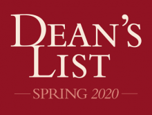
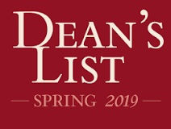
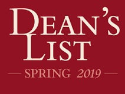
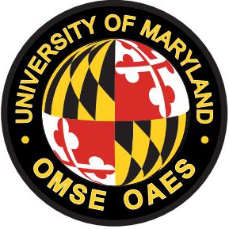
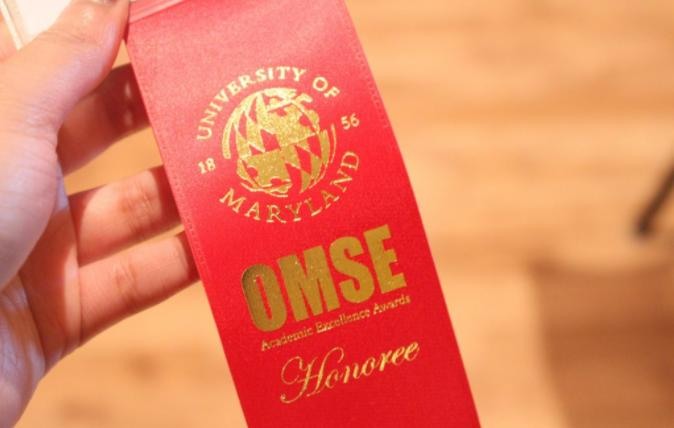
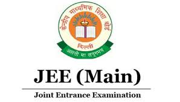
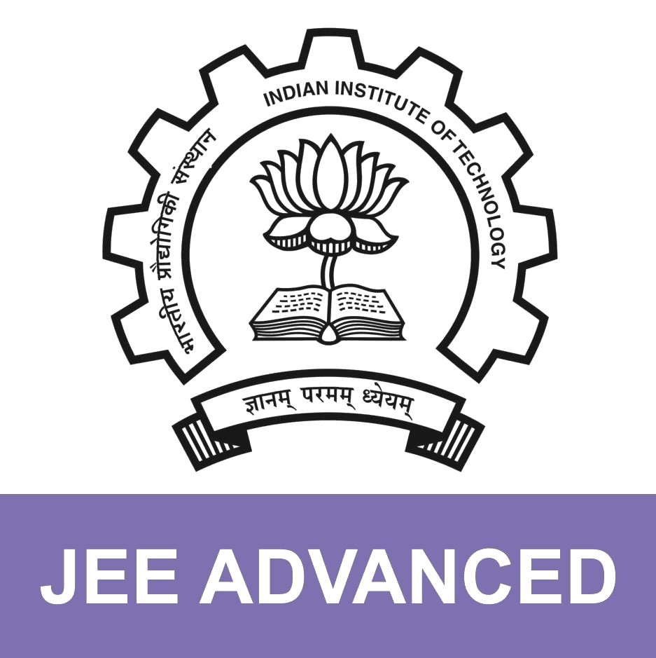

Education
University of Maryland, College Park
Bachelor's of Computer Science • Jan 2019 - Jun 2021
The University of Maryland, College Park, is the state's flagship University and one of the nation's preeminent public research institute. A global leader in research, entrepreneurship, and innovation, the University is home to more than 41,000 students, 14,000 faculty and staff, and 388,000 alumni dedicated to the pursuit of Fearless Ideas. At the University of Maryland is committed to social entrepreneurship as the nation's first "Do Good" campus.
The University of Maryland ranks No. 19 among the nation's top public institutions in the U.S. (News & World Report's 2021 Best Colleges). UMD tied for No. 16 overall and No. 8 among public institutions, with three specialties ranked in the top 25.
Minor in General Business• Aug 2020 - Jun 2021
The University of Maryland's Robert H. Smith School of Business is a comprehensive business school offering top-ranked degree programs at every level, along with executive education courses.
Robert H. Smith School of Business was ranked No. 19 nationally and No. 9 among publics, with four specialties ranked in the top 25.
Dwarkadas J Sanghvi Affiliated with Mumbai University
Bachelor's of Computer Engineering• Aug 2017 - Jan 2019
Dwarkadas J. Sanghvi College of Engineering (DJSCE) is rated amongst the top 100 Engineering Colleges in India by various ranking institutions. DJSCE is awarded an 'A' grade certificate from the Directorate of Technical Education.
Work
Aeon Software Private Limited (Mumbai)
• April 2020 - August 2020
Aeon Software is an IT solution company offering a wide variety of customized software to the public and private industries. It has also designed, developed, and deployed solutions for the Ready-To-Eat market, Retail, Mining industry, Banking & Financial institutes, Consultancy firms, Manufacturing industry, Media & Entertainment, Telecoms, Education & Academic sector, and the Services sector. The ranges of niche solutions include Business Tools, Mobile Applications, Web-based products; Data-based applications, and Embedded technology solutions.
Locabus app
Internship
Locabus is a ticketing platform for daily commuters across the
state to make bus-booking human through natural local language
interactions supported by vital intelligence and Analytics.
This platform would Augment Locabus app with Voice,
thus enabling natural language progression and local /vernacular
versions and almost a hands-off approach to ticket booking on
buses.
I was working closely with Api team both for web and mobile
platform for past six months.
Technology used :ASP.NET, ANGULAR, SQL Server, AWS.
Digilocker Project
Internship
DigiLocker is a flagship initiative of the Ministry of
Electronics & IT under the Digital India program. DigiLocker
aims at 'Digital Empowerment' of a citizen by providing authentic
digital documents to citizens' digital document wallets.
DigiLocker is an initiative of the Government of India
aiming to provide access to authentic digital documents
to citizen's digital document wallet
I was a part of the business analyst team to gather the client's requirement -TATA AIA.
Technology used: Java and Oracle.
Honors & Awards
Academic Honor of Dean's List - Spring 2020, Fall 2019, Spring 2019
The University of Maryland awards Semester Academic Honors (Dean's List) to undergraduate students who complete, within any given semester, with 12 or more credits & a semester GPA of 3.5 or higher.
 

OMSE Academic Excellence Society
Member
The Office of Multi-ethnic Student Education (OMSE), a unit of the Academic Affairs Division of the University of Maryland, offers a variety of services and programs to enhance the learning experience and promote the academic success of undergraduate students. OMSE provides programs and resources that support the academic, personal and professional excellence of students.
 All India ranking :
JEE Advance Rank in the top 1 percentile
JEE Mains Rank in the top 1.5 percentile
In India, the Indian Institutes of Technology (IITs) are institutions of national importance established through Acts of Parliament for fostering excellence in education. JEE (Advanced) & JEE (Mains) conducts exam & ranks undergraduate students all over India for courses leading to a Bachelor's, Integrated Master's, or Bachelor-Master Dual Degree in Engineering, Sciences, or Architecture.
 National Institute of Securities Market Certification
The National Institute of Securities Markets (NISM) is established by the Securities and Exchange Board of India (SEBI), the regulator of India's securities markets. The institute envisions a catalytic role in promoting & certifying securities markets research and education.
Projects
ROBOT PLAYING SOCCER
A robot fitted with many sensors such as Sonar, Tactile sensors, etc., and cameras used to capture images. The field is green, and the soccer ball is orange in color. As a group under my management, we created a way for the robot to determine the orange position and reduce any disturbance in the surrounding. Prior, we train the model and use the N Gaussian model to implement it.


Robot determining the Orange Ball with training model
TREE MAP GRAPH
TreeMap was a freelance project.
The project was to create a TreeMap,
three layers deep in JavaScript.
The map was supposed to interact with the website database.
The map was a part of the MIS representation of a brokers
dealer Asset under management. The size of the box was to
determine the ranking of the client based on the money invested.
The First Layer determined the percentage of active to dormant
clients; on a click, the second layer represented the invested
asset class viz: Equity, Debt, Hybrid of the investor.
The third layer will represent the sub-categories invested
within the broader asset class.

Layer of Dorment Investors

Types of Investments

Sub Category of Investment within the Asset class
IMPROVING COMPUTER PERFORMANCE BY PIPELINING
This project focuses on improving the computer's performance with pipelining, forwarding, and overcoming some of the Data Hazards, Structural Hazards, and Conditional Hazards. This idea was implemented in the C programming language. This program is also used to determine dependence and add stalls to the cycle to prevent Structural Hazards. Data Hazards were reduced with the help of Forwarding of the pipeline. Conditional Hazards were reduced by predicting the jump statement before the Decode Phase.


Recording Canvas
Canvas is a platform created by me to incorporate drawing on laptops. This would help integrate the artistic ability of the user. This platform, at the same time, helps record the event. The attached clip demonstrates that one can create a time-lapse of the video. It is a different approach to drawing on a computer.
JAVASCRIPT ANIMATION
C LEXER AND PARSER
I created a Lexer, which was used to break the C program into tokens with the help of Context-Free Grammar. The lexer would provide me with an array of Tokens. These token are combined to form a Tree with the use of a parser. This tree is further evaluated and delivers the output that a C program would give when compiled.


C Parser and Lexer compiling C program
REGEX, NON DETERMINISTIC FINITE AUTOMATA, DETERMINISTIC FINITE AUTOMATA
A regular expression is the root of every language. I created a Non Deterministic Finite Automata, which would act as a Lexer for the programming. This Non-deterministic Finite automaton would be used to generate Parser or a tree that would later be evaluated.
Regex Expression: a+b*c+def
Non Deterministic Finite Automata

Deterministic Finite Automata
TWITTER SEARCH ENGINE
The Twitter search engine was the first project I made with respect to understanding the website's back-end. Data was taken from Twitter with the help of Twitter API and was used to get the top twenty results from Twitter and displayed on my localhost. This project understands the engine of the website and helps incorporate front-end and back-end developing skills together.
TETRIS
Tetris was one of the most exciting projects I had undertaken. This project was based on Java. It was based on abstract classes, inheritance, and encapsulation. This project was based on the piece being moved about a particular axis and moved in the grid space without going Out of Bounds.
COMMUNITY SERVICE
• Director of SUPW:
Socially Useful Productive Work (SUPW) is a productive work and
services related to the child and the community's needs.
It was introduced by the Ministry of Education to promote
Gandhian values and educational ideas of Mahatma Gandhi.
I was one of the directors in the SUPW group. We organized
projects by which we use to arrange the donation of clothes,
food, umbrella during rains, etc. to help underprivileged children.
• Volunteer at Spina Bifida Foundation:
The Spina Bifida Foundation (SBF) – a not-for-profit organization formed by Medical
Professionals and parents of Spina Bifida Children who have
been involved in the care and upbringing of Spina Bifida
patients in India for more than a decade.
Volunteered in managing events meant for the recreation
& to uplift the spirits of Spina Bifida affected children.
SPORTS
• Represented schools in Basketball Team : Stevens Cooperative School (New York),
DJ Sanghvi College Of Engineering (Mumbai), St Gregorios High School (Mumbai),
National Level Sports Festival for Basketball at Skream ’18.
• National Level winner - Silver & Bronze in Roller Skates.
• Sports of interest: Court Tennis, Cricket, Soccer, Basketball, Table Tennis, Chess.